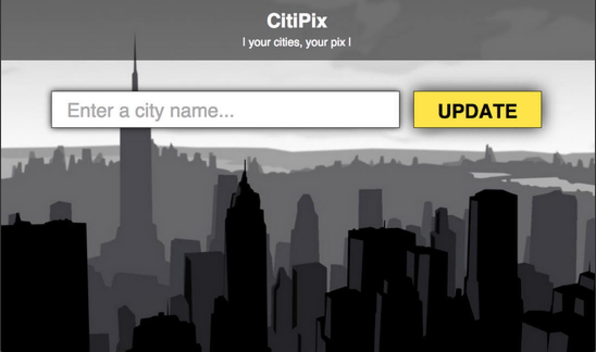

I recently graduated from a Front-End Web Development course at General Assembly where I learned HTML, CSS, JavaScript, jQuery and how to be an awesome Front-End Web Developer! During my spare time, I enjoy senior water aerobics, pickling, and spending time with my goldfish, Jerry.
General Assembly — FEWD 2015 College of Soft Knocks — B.S. 2009 School of Hard Knocks — 2005 (Honors)
